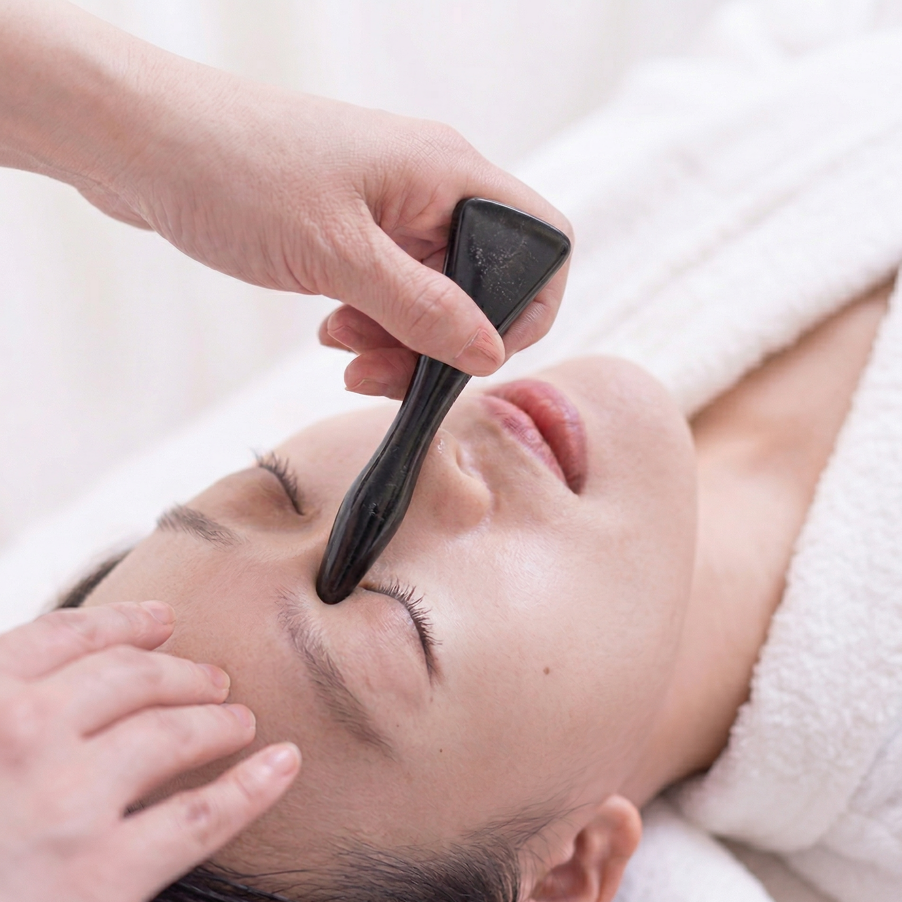

Our Story
拾光故事
薇觀細節，拾回妳的紅潤微光

從「裝飾美」到「原生美」的覺醒
薇老師的美業之路，是從對「細節」的極致追求開始的。早年深耕美容領域，她拿下了美睫、皮膚管理等多項專業證照，熟稔如何透過外在的點綴，讓女性瞬間綻放神采。
然而，在閱臉無數後，薇老師心中卻浮現了一個疑問：「為什麼有些美，卸下妝點後卻顯得疲憊與暗沈？」
她發現，真正的美不應只是表象的遮蓋，而是源於身體內部的平衡與氣血的盈滿。這份覺醒，讓她從單純的美容師，轉身投入了深奧的經絡調理世界。
為什麼是「臉部筋絡」？
在擁有豐富的全身按摩經驗後，薇老師驚覺：「臉部，其實是身體最誠實的鏡子。」
中醫常說「十二經脈，三百六十五絡，其血氣皆上注於面」。臉部不僅匯聚了多條重要經絡，更是現代人壓力最集中的地方。長期處於高壓、緊繃的狀態，會讓臉部筋膜僵硬、淋巴淤滯，這就是為什麼保養品吸收不進去、輪廓線日漸模糊、氣色始終蠟黃的原因。
透過「撥筋」，能產生三種深層改變：
深層疏通
揉開因壓力堆積的氣結，讓受阻的循環重新流動。
肌底喚醒
透過手感力道導引氣血，讓肌膚由內而外透出自然的紅潤「氣色」。
輪廓微雕
釋放緊繃肌群，讓臉部線條重回輕盈、緊緻的狀態。
懂妳的虛，更懂妳的累
身為兩個女兒的母親，薇老師深刻體會女性在不同人生階段的辛勞。本身也是「虛寒體質」的她，長期受手腳冰冷、易疲累所苦，這讓她比任何人都更重視「溫補」與「調養」。
「我們照顧了孩子、照顧了家庭，卻常忘了照顧那個支撐這一切的自己。」
薇老師將這份感同身受融入了「薇拾光」。她堅持在療程中加入溫熱舒緩與肩頸釋壓，正是因為她知道，女性的保養不該只是針對臉，更要照顧到寒涼的體質與緊繃的靈魂。
薇拾光的初衷
這裡沒有推銷的喧囂，
只有指尖與筋絡的對話。
薇老師希望，每一位踏進這裡的女性，都能在兩個小時的靜謐中，卸下武裝。
在「薇拾光」，我們不只是在撥開筋絡，更是在為妳撥開生活的塵埃，找回那個閃閃發亮的、最初的自己。